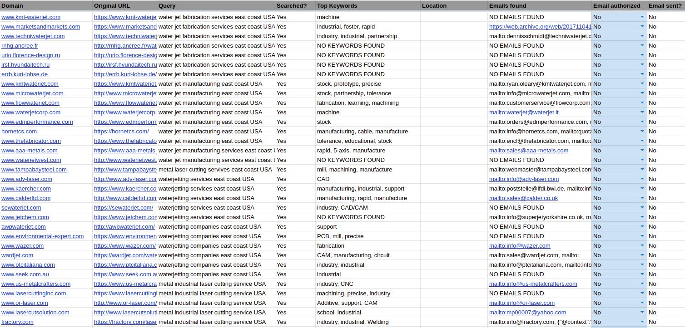

 This is the result sheet where all of the website data found is stored.
Background
The FSAE team at Olin, Olin Electric Motorsports (OEM), receives no money from the school, and as such, we are completely self funded. As such, reaching out to potential sponsors is a very important part of being part of the team, as they are the ones who make it all possible. However, this process is boring and time consuming. As such, I made a tool to help to automate the process.
How it works
The tool performs 3 main tasks independently. Firstly, it takes a list of terms (ex: ‘CNC companies near Boston’) and queries google for these terms. It saves the search results from these queries in a ‘database’.
Secondly it takes search results for previously executed queries, and searches each domain from the list of results (BFS with priority queue to maximize odds of finding email addresses quickly). Each page that is visited has its text analyzed for certain keywords (to get a gauge on the type of website/company it is). Additionally, any email addresses that are found are stored in the ‘database’.
Finally, when authorized, it can/will automatically send emails to addresses that are found. Each email requires authorization from a human user to make sure we don’t spam sponsor requests to irrelevant companies whose emails we found on accident.
I’m not a Full Stack Developer, but I can use spreadsheets
Why did I refer to the ‘Database’ in quotes? Well, because I’m not a full stack developer, and couldn’t be bothered to make and host a working backend with a database, nor to create a nice front end, I used google sheets to host everything. Various worksheets on the spreadsheet are dedicated to information storage and retrieval, while other worksheets are used by humans in order to control the operation of the tool, such as how many pages to scrape in a single session.
I’m pretty happy with this solution, as it allows anyone on the team to be able to access, interact with, and use this tool without having to know python or mess with installing environments or dependencies. And, best of all, it was really easy for me!